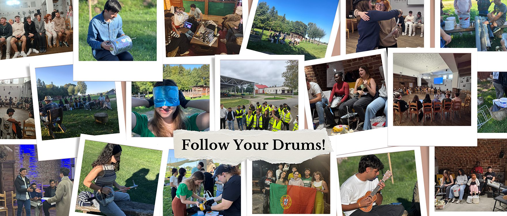
Erasmus+ Youth Exchange · Project story
Follow Your Drums!
Turning waste into music: can music save our planet?
- When
- 17–25 September 2025
- Where
- Krosno, Poland
- From
- Portugal, Hungary, Romania, North Macedonia, Poland
- Subjects
- Music, junk art
01
Getting in tune
From 17 to 25 September 2025, we took part in the Erasmus+ youth exchange Follow Your Drums! in Krosno, Poland, together with participants from Portugal, Hungary, Romania, North Macedonia and Poland. On the first day we focused on getting to know each other and building a positive group atmosphere. Very quickly, we felt comfortable, connected and ready to collaborate.
The project was presented in a dynamic, interactive way that immediately motivated us. Instead of sitting through a traditional workshop, we explored Erasmus+ opportunities by creating AI-generated videos, developing digital skills while promoting youth exchanges, volunteering and mobility programmes.
Later, we went into the city to pick up trash and interview local residents. This helped us support the environment, connect with the local community and raise awareness about sustainability.
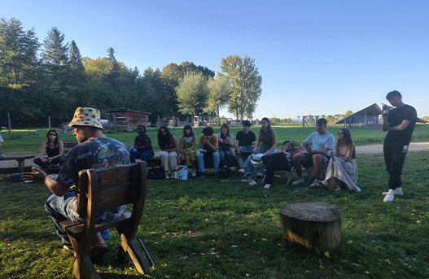
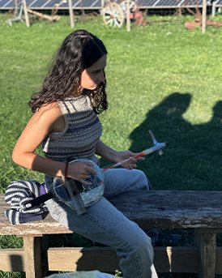
02
Trash into instruments
Music was the core of the project. With the support of our facilitator and drumming expert Piotr, we transformed collected waste into percussion instruments. We sanitised the materials, decorated them, and turned trash into art.
Then we formed groups and began composing rhythms and songs, either covering known tracks or creating our own. It was inspiring to see how much creativity could come from recycled objects.
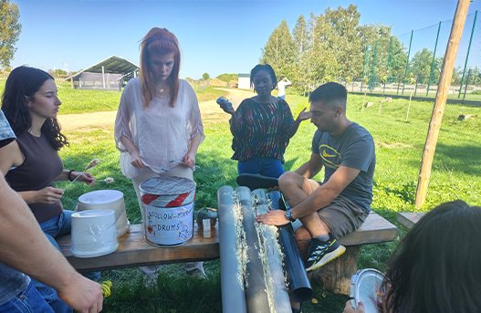
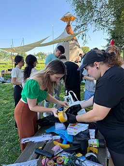
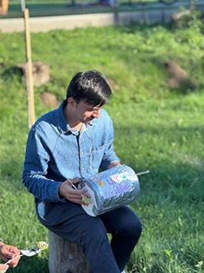
03
Becoming a band
As the week went on, our teamwork and musical skills grew stronger. We spent time practising, experimenting and jamming as a full group. One of the highlights was composing one big group song that we all performed together. We felt like a real band, learning how to listen, synchronise and support each other.
Each group then recorded their songs on several devices, and we mixed the best takes to get high-quality sound: our first experience of music production.
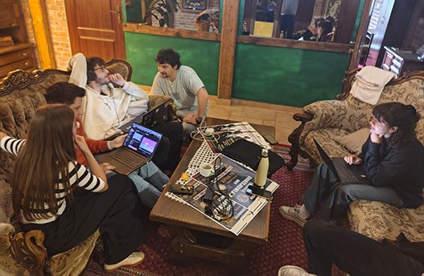
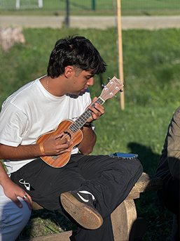
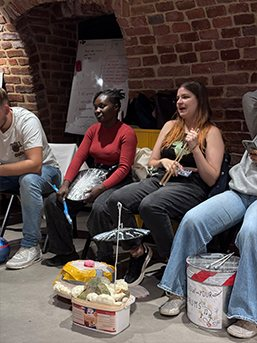
04
Music videos with AI
We also combined creativity with technology by producing music videos with AI tools such as Viddo.ai and Google Veo 3, merging AI-generated visuals with our own footage for modern, artistic results. It showed us how innovation and digital tools can enhance artistic expression and make our work more impactful.
Videos come from YouTube (Google) and load only when you press play. How we handle this
05
Inside MPGK
One of the most eye-opening moments was the visit to MPGK Krosno, the city’s waste management and water treatment facility. We learned how recycling and resource management work in real life, how AI and robotics support the process, and how clean energy is produced from bio-fermentation and solar farms.
We were impressed that this energy is used to power public buses and electric vehicles. Meeting the president of MPGK gave us deeper insight into sustainability at a regional level.
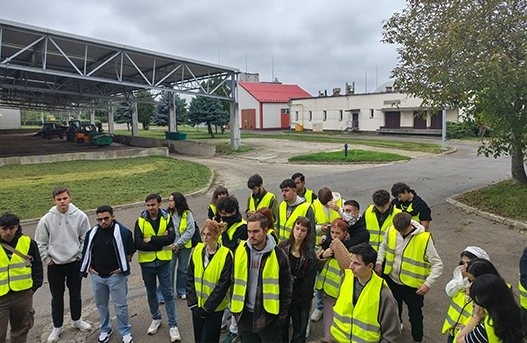
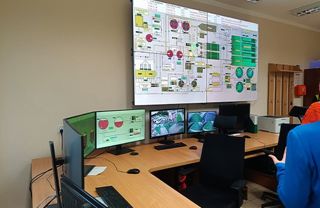
06
The concert
The project ended with a public concert at the Krosno Youth Centre, where we performed our songs live and even jammed with the audience and local decision-makers. It was a powerful moment to share our message with the community.
On the final day, we reflected on everything we had learned, received our Youthpass certificates, and celebrated with farewell activities.
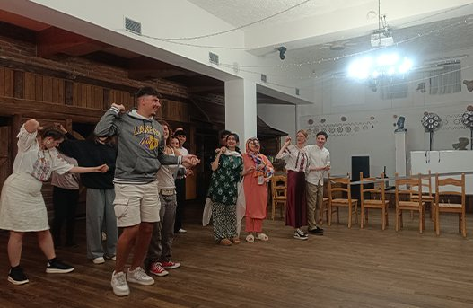
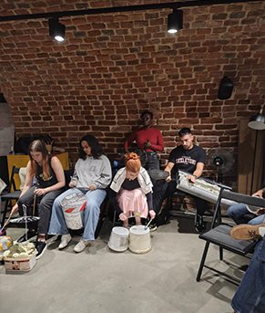
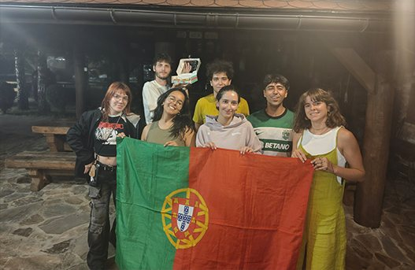
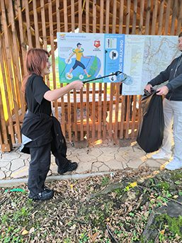
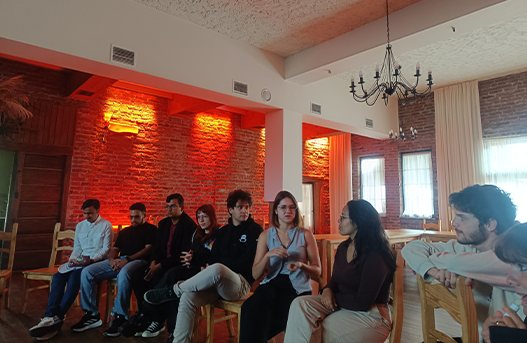
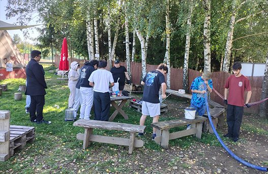
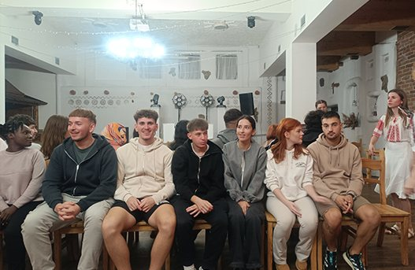
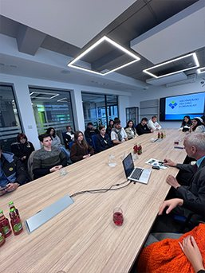
The week in photos · scroll sideways for more →
We returned home with new friendships, confidence, creative skills, and the belief that when we follow our rhythm together, we can inspire real change.
All resources and photos ↗ Back to all projects